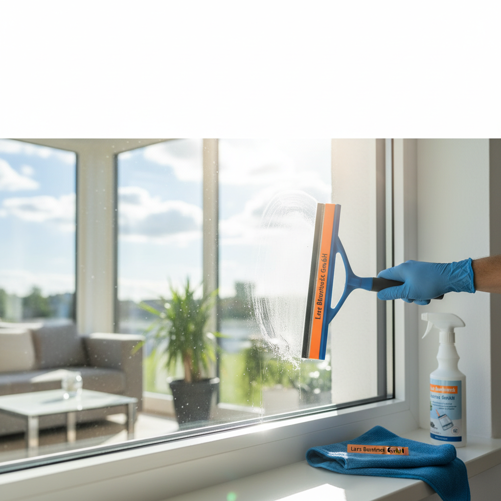
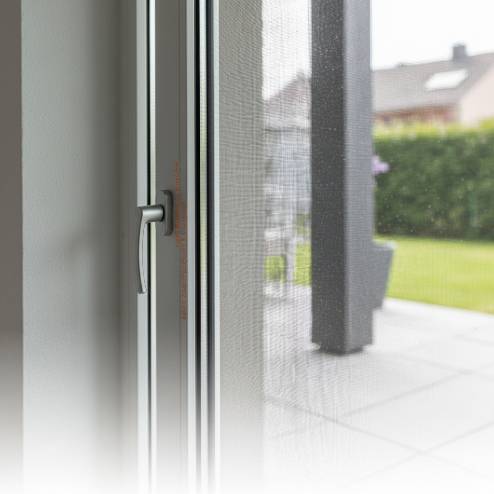

Unsere Leistungen für Ihr Zuhause in Erfurt
Von strahlenden Fenstern bis zum gepflegten Garten – wir bieten Ihnen den kompletten Service aus einer Hand.
Ihr zuverlässiger Partner für Haus und Garten
Lars Buntrock Service GmbH ist Ihr Experte für Glasreinigung, Gartenservice und Insektenschutz in Erfurt. Wir bieten Ihnen maßgeschneiderte Lösungen für ein perfektes Zuhause.
Glas- & Fensterreinigung: Klare Sicht garantiert
Streifenfreie Sauberkeit für Ihre Fenster und Glasflächen. Wir verwenden professionelle Techniken und umweltschonende Reinigungsmittel für ein perfektes Ergebnis.
- Professionelle Reinigung von Fenstern, Glasfassaden und Wintergärten
- Umweltschonende Reinigungsmittel
- Schnelle und zuverlässige Ausführung

Gartenservice: Ihr Garten in besten Händen
Wir kümmern uns um die Pflege Ihres Gartens – von Rasenmähen über Heckenschnitt bis zur Beetpflege. Genießen Sie eine grüne Oase ohne Aufwand.
- Rasenpflege, Heckenschnitt und Beetpflege
- Professionelle Beratung und Planung
- Individuelle Gartenkonzepte
Insektenschutz: Ruhe vor lästigen Plagegeistern
Wir bieten Ihnen maßgefertigte Insektenschutzlösungen von Neher für Fenster und Türen. Genießen Sie ungestörte Sommerabende ohne Mücken und Fliegen.
- Individuelle Lösungen für Fenster und Türen
- Hochwertige Materialien von Neher
- Professionelle Montage
